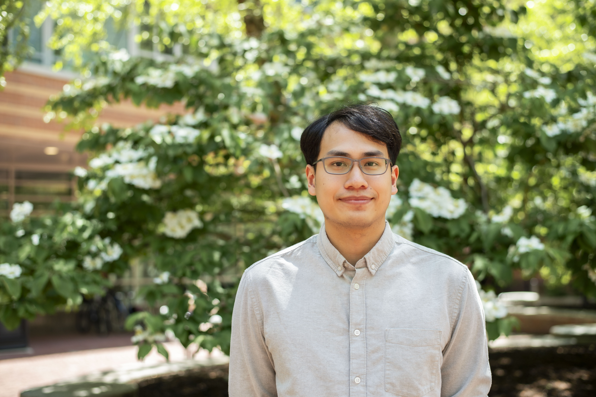

|  |
Shih-Po Lee (Robert)
|

Education
 |
Master of Science in Institute of Computer Science and Engineering, National Chiao Tung University (NCTU), Taiwan
[September 2018 - August 2020]
|
 |
Bachelor of Science in Computer Science and Engineering, National Sun Yat-sen University (NSYSU), Taiwan
[September 2014 - July 2018]
|
Experience
|
Research Assistant of UW-NCTU AI Lab supported by University of Washington and National Chiao Tung University
[August 2020 - present]
|
|
Teaching Assistant for MediaTek in-house AI training program
[August 2019 - January 2020]
|
Research Interests
|
Image/Video Semantic Segmentation
|
|
|
Weakly Supervised Semantic Segmentation
|